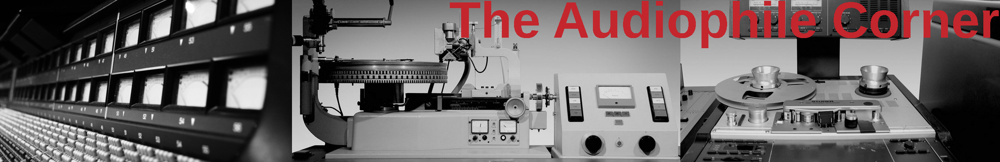

home

Forthcoming articles
- Transient speed of large woofers and the myth of the Γ-acceleration factor
- Measuring the dynamic range as a proxy for music quality
- HD audio: is ΣΔ(sigma-delta) better than PCM quantization?
- Low latency playback in computer based hifi systems
- Music power and power handling in low order passive crossover networks
- Setting up a minimalist Linux/Alsa system for the radical-audiophile-freak
- Why writing music on optical disks (CD-RW) is not easy
••• PAGE UNDER CONSTRUCTION •••